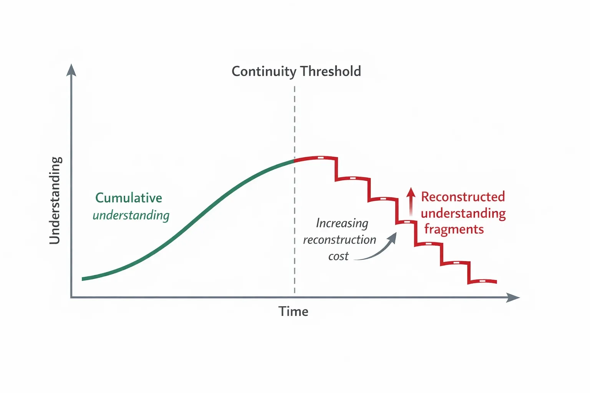

We are building systems that act.
But we are not yet able to follow how their reasoning evolves.
This is the gap.
AI governance has made significant progress.
Frameworks now address: risk, transparency, oversight, and accountability.
Yet these approaches largely operate at identifiable points:
before deployment
after outcomes
What remains structurally undefined is what happens in between.
This “in-between” is where systems actually operate:
reasoning evolves
decisions form
context shifts
Governance assumes decisions can be evaluated.
It does not ensure that reasoning can be followed forward.
This creates a structural condition— and it does not degrade gradually.
outcomes are visible
reasoning is not continuous
This transition is not gradual.
It behaves more like a threshold.
Beyond a certain point, reasoning can no longer be followed forward.
It must be reconstructed— at increasing cost.
This can be described as a continuity threshold.
Below it, understanding accumulates. Above it, understanding fragments.

When continuity breaks, understanding does not disappear— it becomes increasingly costly to reconstruct.
When reasoning cannot be carried forward, responsibility becomes difficult to trace.
Governance becomes:
predictive before
reactive after
but structurally incomplete during.
The missing layer is continuity.
Not more control— but the ability to follow reasoning across system evolution.
This aligns with existing frameworks such as the EU AI Act, which emphasize transparency and oversight— but do not guarantee continuity of reasoning.
The challenge is not only to govern outcomes.
It is to structure how decisions emerge and evolve.
Proposition
Current AI governance frameworks lack a structural mechanism to preserve and follow reasoning, intention, and responsibility across system evolution.
Intention
To identify and articulate a missing layer in AI governance: continuity of reasoning as a prerequisite for durable accountability.
Justification
This proposition is grounded in:
– structural analysis of governance systems
– research and models developed at
auditedstate.app
– exploratory infrastructure work at
CognitiveSuperHighway.org
Status
Public, non-proprietary, open to critique and extension.
Primary Contributor
Arne Thomas Mayoh
Datestamp
2026-04
PIFR Identifier
PIFR-GOV-GAP-2026-04-CONTINUITY-7F3A9C
Forward Criteria
– improves traceability of reasoning
– preserves continuity across system states
– strengthens attribution of responsibility
– reduces reliance on reactive governance
– enables shared understanding across actors
A similar structural problem has appeared before.
The emergence of traffic required not better vehicles, but infrastructure for interaction.
This parallel is explored here:
Return: Essays